Подборка · 10 сайтов

10 сайтов старого интернета, которые работают до сих пор
Начальный уровень
Ради одной мелкой задачи мы ставим приложение, заводим ещё один аккаунт или берём пробную подписку, которую потом забываем отменить. А в интернете до сих пор живут сайты из тех времён, когда всё было проще: каждый делает ровно одну вещь, открыл, сделал, закрыл. Почти везде без регистрации.
Здесь 10 таких сайтов. Одни закрывают бытовое: передать тяжёлый файл без облака, найти рецепт из того, что уже лежит в холодильнике, склеить PDF. Другие показывают то, что обычно скрыто: где в сети ещё лежит твоё фото и что любой сайт узнаёт о твоём браузере. По каждому ниже: что нажать по шагам, нужна ли регистрация и где подвох. Подвох есть у каждого.
1. FilePizza: отправить тяжёлый файл без облака
Нужно передать тяжёлый файл, а загружать его в облако ради одной ссылки не хочется.
FilePizza - сайт для передачи файла из твоего браузера в браузер получателя. Он использует WebRTC, технологию прямого соединения браузеров. Файл не лежит на сервере: ссылка соединяет отправителя и получателя, и передача идёт между ними. По сути это передача из рук в руки, только через интернет.
Оставить файл по ссылке на потом не получится. Оба человека должны быть онлайн одновременно, а вкладка отправителя должна оставаться открытой до конца скачивания.
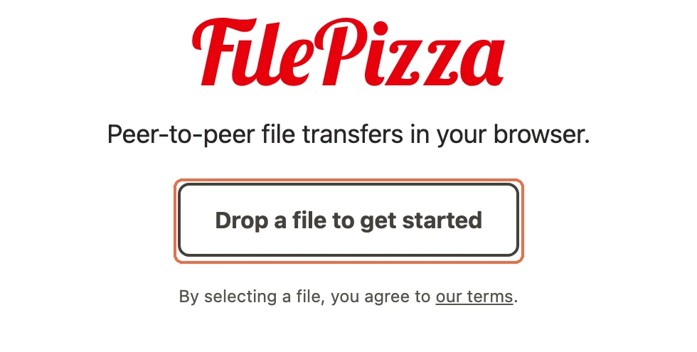
Ссылка: https://file.pizza/
Как начать:
- Открой FilePizza и перетащи файл на кнопку Drop a file to get started. Можно нажать кнопку и выбрать файл на компьютере.
- Когда появится ссылка, скопируй её и отправь получателю. Пароль можно поставить по желанию.
- Попроси получателя открыть ссылку и скачать файл. Не закрывай свою вкладку, пока скачивание не закончится.
Результат: Получатель скачает файл напрямую из твоего браузера. Если передаёшь несколько файлов, он получит их одним zip-архивом, то есть одним файлом с остальными внутри.
Регистрация: Не нужна ни отправителю, ни получателю.
Подвох: Закроешь вкладку - ссылка перестанет работать. Фиксированного размера сайт не обещает: предел зависит от того, с каким файлом справится браузер. FilePizza работает в большинстве мобильных браузеров.
2. SunCalc: узнать, где будет солнце
Выбираешь место и время для съёмки, а где окажется солнце, приходится угадывать. Знать время заката мало, нужно ещё понять, откуда будет падать свет.
SunCalc - сайт с картой движения солнца. Ты задаёшь место и дату, а он показывает путь солнца и время восхода и заката. Тонкая жёлтая дуга обозначает путь в выбранный день, жёлтая заливка показывает, как этот путь меняется за год. Чем ближе точка к центру, тем выше солнце. Карту можно читать как расписание света для конкретного места.
Показанное время относится к часовому поясу выбранного места.
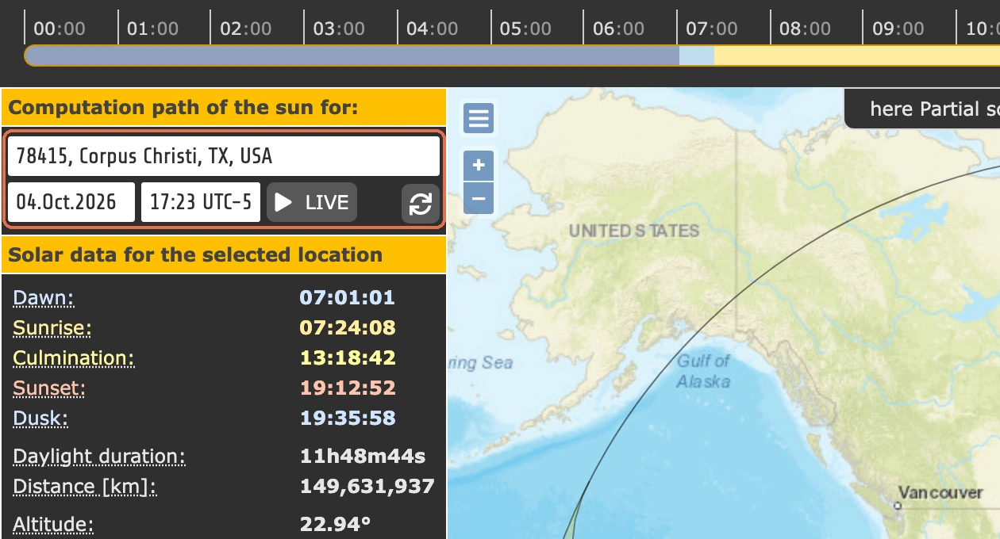
Ссылка: https://www.suncalc.org/
Как начать:
- Открой SunCalc и введи нужный адрес в поле слева вверху.
- В соседнем поле с датой выбери день, для которого нужен расчёт.
- Подвигай ползунок времени вверху мышкой или стрелками клавиатуры. Посмотри на жёлтую дугу и строки Sunrise, Sunset и Daylight duration слева.
Результат: Увидишь время восхода, заката и длину дня для выбранного места, а на карте - путь солнца в этот день.
Регистрация: Не нужна.
Подвох: Интерфейс на английском и перегружен цифрами. Для начала смотри только на адрес, дату, Sunrise/Sunset и жёлтую дугу.
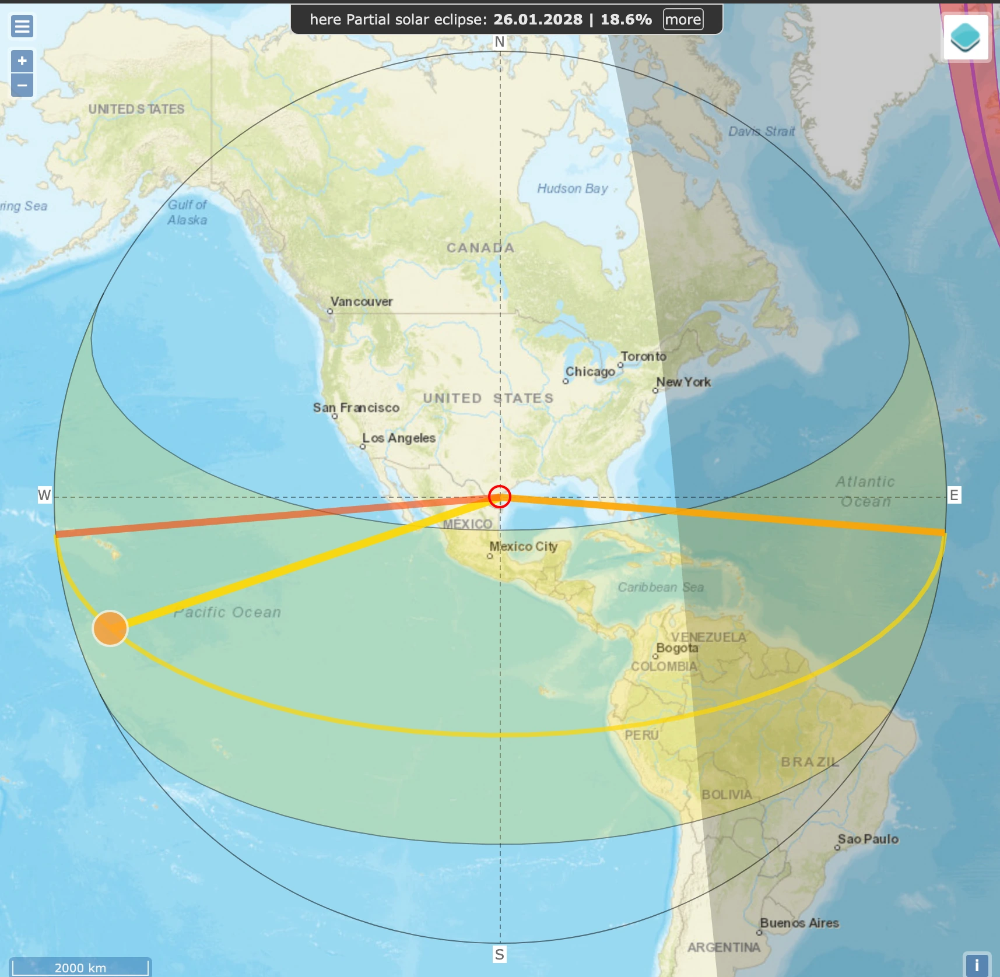
3. MyFridgeFood: найти рецепт из того, что есть дома
В холодильнике есть продукты, но в каждом рецепте из поиска не хватает ещё чего-нибудь, и опять идти в магазин.
MyFridgeFood - сайт, который подбирает рецепты по отмеченным продуктам. Ты собираешь список ингредиентов, а сайт показывает блюда: сначала те, где ничего не надо докупать, затем варианты с одним недостающим продуктом.
Продукты и рецепты здесь на английском, сами рецепты американские. Поиск доступен без входа, но для сохранения рецептов в закладки нужен аккаунт.
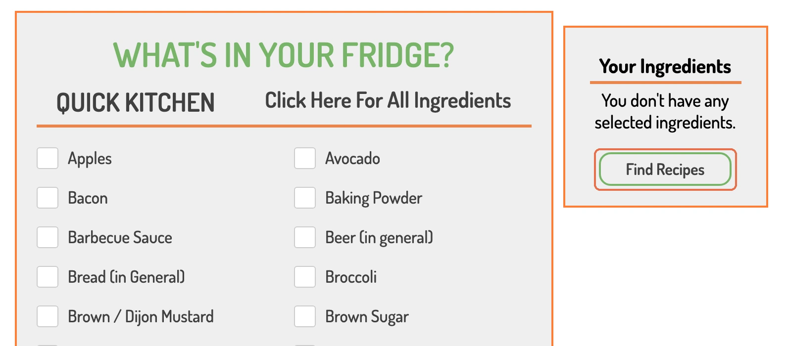
Ссылка: https://www.myfridgefood.com/
Как начать:
- Открой адрес именно с www. Найди блок What's in your fridge? («Что в твоём холодильнике?»), а не поле поиска в шапке.
- Отметь продукты галочками. Quick Kitchen - короткий список; если нужного продукта там нет, нажми Click Here For All Ingredients для полного списка. Для примера отметь Eggs (яйца), Flour (мука), Milk (молоко) и Sugar (сахар).
- Посмотри справа на Your Ingredients («Твои продукты»): там появится выбранное. Нажми Find Recipes.
Результат: Сверху будут рецепты с пометкой No Missing Ingredients! («Все продукты есть»). Ниже - рецепты, где не хватает одного продукта, его название указано под рецептом. Например, для яиц, муки, молока и сахара среди первых вариантов есть Yorkshire Pudding и Popovers.
Регистрация: Для поиска не нужна. Надпись Log in to bookmark! означает, что для сохранения рецепта в закладки нужно войти.
Подвох: На страницах много рекламы. Работай с блоком продуктов и кнопкой Find Recipes; адрес без www не открывается.
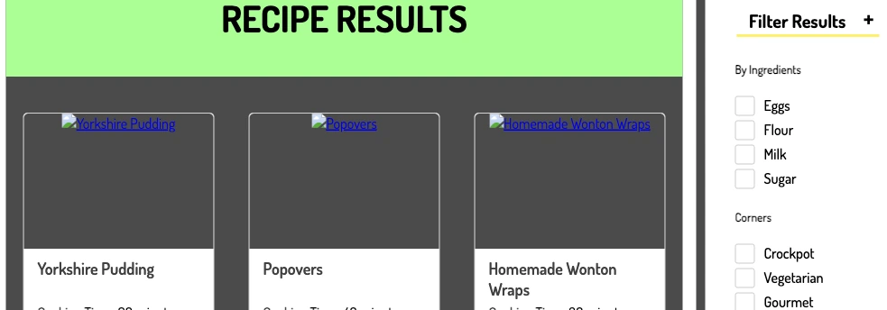
4. GetHuman: найти путь к человеку в поддержке
Звонишь в компанию, а робот по кругу предлагает меню, и до живого человека не добраться.
GetHuman - сайт со страницами поддержки компаний. В карточке компании собраны телефонный номер, подсказка для прохождения робота, часы работы и сведения об ожидании. Как будто кто-то уже прошёл это меню до тебя и оставил записку.
Работает только с зарубежными компаниями и только латиницей: по-русски поиск ничего не находит. Пригодится, если надо дозвониться в Amazon, PayPal или иностранную авиакомпанию. Даже у российских компаний, которые там есть, указан номер зарубежного офиса: у Аэрофлота это американский номер с часами работы по времени Нью-Йорка. Каталог с 2006 года ведёт команда GetHuman, она сама обзванивает компании и записывает, как пройти робота. У страницы есть дата обновления: телефонный номер мог измениться после неё.
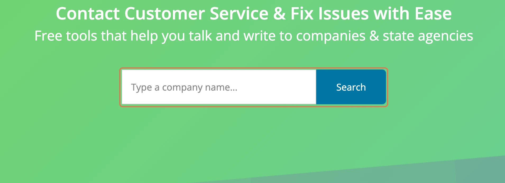
Ссылка: https://gethuman.com/
Как начать:
- Открой GetHuman и введи название компании в поле Type a company name... (название компании). Для примера можно ввести Amazon.
- Нажми Search, затем открой страницу нужной компании.
- На странице найди дату обновления, телефонный номер и подсказку, как пройти робота. Посмотри часы работы, среднее время ожидания и дни, когда линия меньше занята.
Результат: Получишь телефонный номер поддержки и подсказку, как выйти на человека. На странице Amazon фраза Don't press or say anything OR press 0 значит «Ничего не нажимай и не говори либо нажми 0».
Регистрация: Не нужна.
Подвох: Название компании вводи латиницей, кириллицу поиск не понимает. Сайт живёт на рекламе. Номер и телефонное меню могут устареть, поэтому перед звонком посмотри дату обновления страницы.
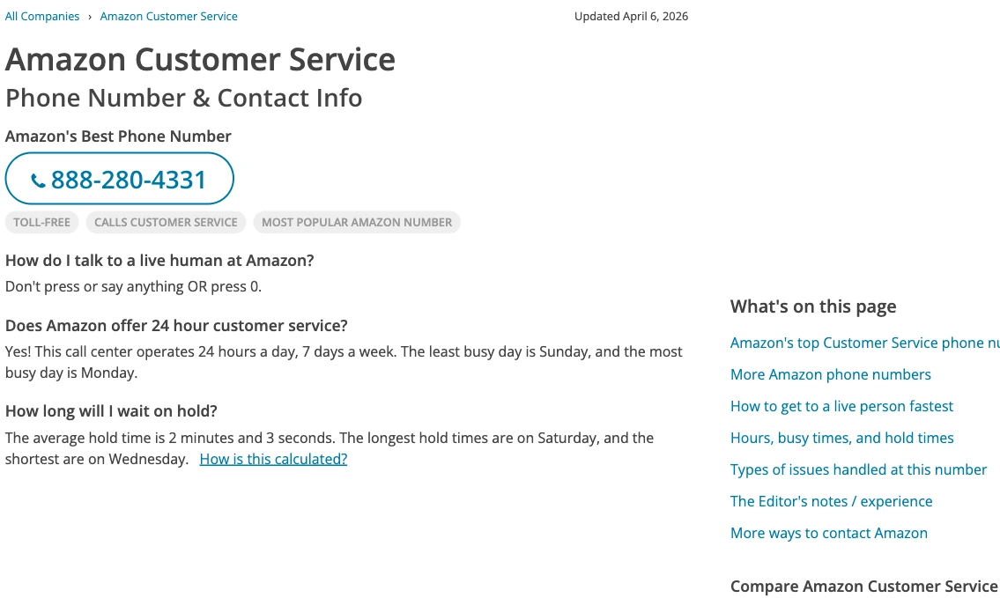
5. JustDeleteMe: разобраться, как удалить аккаунт
Сервисом давно не пользуешься, а аккаунт всё ещё там. Кнопка удаления спрятана, и непонятно, можно ли вообще удалить учётную запись.
JustDeleteMe - каталог ссылок и инструкций по удалению аккаунтов. Он показывает сложность процедуры, раскрывает шаги и ведёт на страницу самого сервиса. Он работает как указатель: показывает дверь, а удаляешь ты у самого сервиса.
JustDeleteMe сам аккаунты не удаляет. Ссылки могут отстать от изменений чужого сайта, а пометка «Невозможно» означает, что доступна только деактивация.
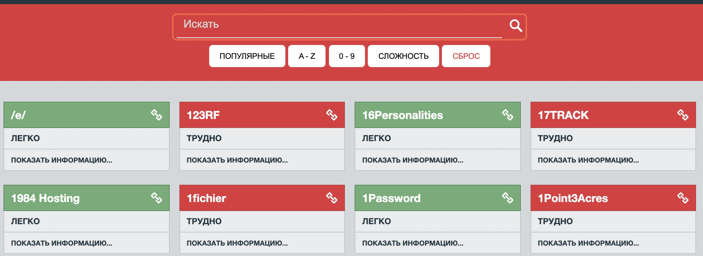
Ссылка: https://justdeleteme.xyz/
Как начать:
- Открой justdeleteme.xyz и введи название сервиса в поле «Искать».
- Посмотри на плашку сложности и нажми «Показать информацию», чтобы раскрыть порядок удаления.
- Если удаление доступно, нажми название сервиса: ссылка приведёт на его страницу удаления. Пройди шаги из раскрытой инструкции. При пометке «Невозможно» доступна только деактивация.
Результат: Узнаешь, где удалять аккаунт и что для этого нужно, и попадёшь на страницу удаления самого сервиса.
- Лёгкий: удалить можно в настройках.
- Средний: нужны дополнительные шаги, подтверждение почтой или ожидание.
- Трудный: удаление через поддержку или форму.
- Невозможно: удалить нельзя, только деактивировать.
Регистрация: В JustDeleteMe не нужна.
Подвох: Если ссылка устарела, ищи удаление в настройках самого сервиса. Используй адрес .xyz: старый justdelete.me теперь ведёт на чужой сайт.
6. PDF24 Tools: объединить, разделить или сжать PDF
Нужно отправить один PDF, а на руках несколько файлов. Или документ слишком тяжёлый, и его надо сжать. Ставить ради этого большой редактор не хочется.
PDF24 Tools - сайт с отдельными инструментами для PDF на русском. Выбираешь задачу на плитке, загружаешь файл и скачиваешь результат обработки. Есть объединение, разделение, сжатие, подпись и конвертер. Это похоже на ящик с инструментами: для каждой работы берёшь свой.
В онлайн-версии файл на время попадает на серверы PDF24. Для документа, который не хочется туда отдавать, сайт предлагает программу PDF24 Creator: с ней файлы остаются на твоём компьютере.
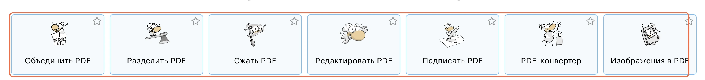
Ссылка: https://tools.pdf24.org/ru/
Как начать:
- Открой PDF24 Tools и выбери плитку под задачу: например, «Объединить PDF», «Разделить PDF» или «Сжать PDF».
- На странице выбранного инструмента загрузи файл. Для объединения загрузи файлы, которые нужно собрать вместе.
- Запусти выбранную операцию, дождись обработки и скачай результат.
Результат: Получишь файл после выбранной операции: объединённый, разделённый, сжатый, подписанный или преобразованный.
Регистрация: Не нужна. Сайт пишет, что искусственных ограничений нет, и держится на рекламе.
Подвох: Файлы обрабатываются на сервере. PDF24 пишет, что полностью удаляет их через некоторое время, но точного срока в этой формулировке нет. Если документ должен оставаться на компьютере, используй предложенный сайтом PDF24 Creator.
7. Namechk: проверить, где свободен твой ник
Придумываешь имя для проекта, а при регистрации выясняется, что ник, короткое имя аккаунта, уже занят. И так на каждой площадке по очереди.
Namechk - сайт для проверки имени в адресах сайтов и аккаунтах соцсетей. Вводишь один ник, а сервис показывает доступность на разных площадках. Зелёным подсвечивает свободные варианты, занятые остаются приглушёнными.
Проверка охватывает в основном зарубежные площадки. В шапке сайта заявлены более 30 доменов, то есть адресов сайтов, и более 90 аккаунтов соцсетей. Среди проверяемых площадок Facebook (Meta*), YouTube, TikTok, Twitch, Tumblr, WordPress, eBay и PayPal.
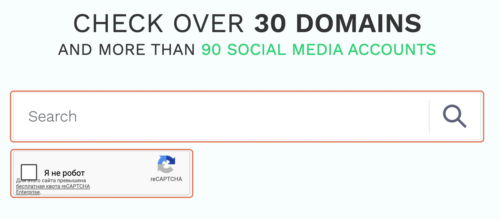
Ссылка: https://namechk.com/
Как начать:
- Открой Namechk и введи желаемый ник в большое поле Search.
- Пройди капчу «Я не робот», проверку перед поиском.
- Нажми значок лупы справа от поля. Посмотри, какие площадки подсветились зелёным, а какие остались приглушёнными.
Результат: Увидишь, на каких проверяемых площадках ник свободен, а где уже занят.
Регистрация: Не нужна, банковская карта тоже не требуется.
Подвох: Перед поиском нужно пройти капчу. Меню и блоки про хостинг и конструкторы сайтов к проверке ника не относятся.
8. Cover Your Tracks: узнать, как сайты узнают твой браузер
Куки удалены, и кажется, что сайты тебя больше не узнают. Но узнать браузер можно и без них.
Cover Your Tracks - сайт с тестом от Electronic Frontier Foundation (EFF). Он проверяет блокировку рекламных и невидимых трекеров, средств слежки, а также защиту от отпечатка браузера. Отпечаток - набор свойств браузера и компьютера: часовой пояс, версия браузера, разрешение экрана и шрифты. По этому набору сайт может узнавать тебя без куки, записей о посетителе в браузере. Так узнают человека по походке и голосу, даже если он не назвал имени.
Тест показывает состояние защиты, но сам её не включает. EFF также предупреждает, что он измеряет не все виды слежки.
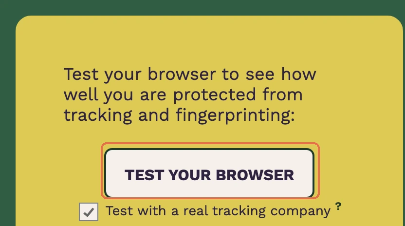
Ссылка: https://coveryourtracks.eff.org/
Как начать:
- Открой Cover Your Tracks в том браузере, который хочешь проверить.
- Нажми TEST YOUR BROWSER и подожди несколько секунд.
- Прочитай Blocking tracking ads?: блокирует ли браузер рекламные трекеры.
- Посмотри Blocking invisible trackers?: блокируются ли невидимые трекеры.
- Посмотри Protecting you from fingerprinting?: защищает ли браузер от отпечатка.
Результат: Получишь отчёт о своём браузере. Фраза Your browser has a unique fingerprint значит «У твоего браузера уникальный отпечаток»: по проверяемому набору свойств он выделяется среди браузеров, участвовавших в тесте.
Регистрация: Не нужна.
Подвох: Отчёт не даёт полной картины слежки и не защищает браузер сам. EFF советует блокировщик трекеров Privacy Badger или браузер со встроенной защитой от отпечатка.
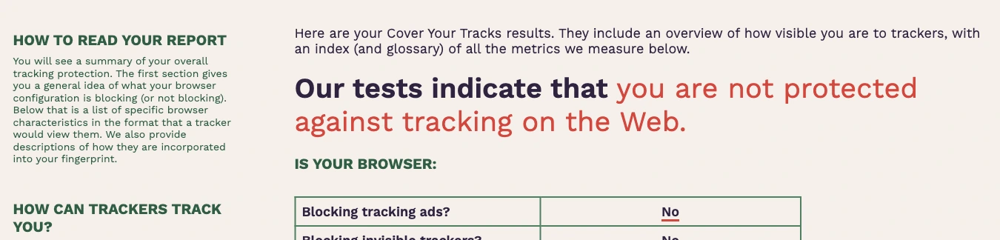
9. TinEye: найти, где ещё встречается эта фотография
Находишь фотографию и хочешь понять, где она встречалась раньше. Поиск словами не помогает: названия снимка ты не знаешь.
TinEye - сайт для поиска по самой картинке. Загружаешь фото или вставляешь ссылку на него, а он ищет копии по базе более 86 миллиардов изображений. Находит и обрезанные или изменённые версии того же снимка.
Другие фотографии того же человека или предмета TinEye не ищет. Найденные изображения по-прежнему защищены авторским правом.
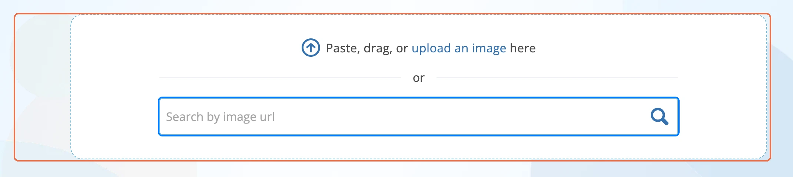
Ссылка: https://tineye.com/
Как начать:
- Открой TinEye. Перетащи фото в рамку Paste, drag, or upload an image here или нажми на неё, чтобы выбрать файл. Подойдут JPEG, PNG, GIF, BMP, TIFF и WebP, до 20 МБ и от 100 пикселей по стороне.
- Если файл не скачан, вставь ссылку именно на картинку в поле Search by image url и нажми лупу справа.
- В результатах открой Sort by и выбери порядок: Newest для самых новых копий, Oldest для самых старых или вариант самой большой картинки.
Результат: Получишь список сайтов, где встречается этот снимок, и сможешь сравнить копии по времени или размеру.
Регистрация: Не нужна. TinEye пишет, что не сохраняет загруженную картинку и не отслеживает поиск.
Подвох: Результат относится к копиям одного снимка, а не ко всем фото изображённого человека или предмета. Наличие картинки в выдаче не разрешает использовать её без учёта авторских прав.
10. IsThereAnyDeal: сравнить цену игры с её прежними скидками
На игру снова скидка, и цена выглядит заманчиво. Только непонятно, бывала ли она ниже и сколько игра стоит в других магазинах.
IsThereAnyDeal - сайт сравнения цен на игры. У каждой игры есть лучшая текущая цена, минимум за всё время и таблица магазинов с их ценами. Можно сопоставить предложение сегодня с историей скидок. Как ценник, рядом с которым висят все прежние.
Сравнение зависит от выбранных региона и валюты. Смотреть цены можно без входа, а для списка ожидания с уведомлением о снижении цены нужен аккаунт.
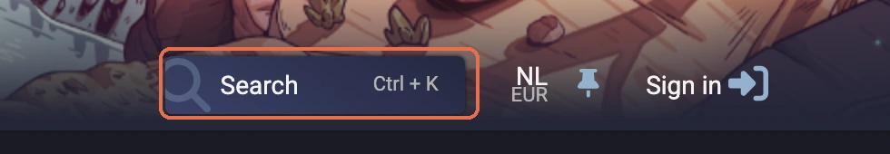
Ссылка: https://isthereanydeal.com/
Как начать:
- Открой IsThereAnyDeal и посмотри на регион и валюту вверху справа. При необходимости переключи их: на показанном экране выбраны NL и EUR.
- Нажми Search вверху, введи название игры и открой её страницу.
- Сравни Current best и All time low, затем таблицу магазинов ниже. Если хочешь уведомление о снижении цены, войди в аккаунт и добавь игру в список ожидания кнопкой Wait.
Результат: Увидишь лучшую цену сейчас и магазин, исторический минимум с датой и цены отдельных магазинов. На примере Hollow Knight 04.10.2026: Current best - 14,79 € в GOG; All time low - 4,39 € в GOG 27.11.2020. Ниже есть Steam, GOG, GreenManGaming и Humble Store.
Регистрация: Для просмотра цен не нужна. Для списка ожидания и уведомлений нужна.
Подвох: Цена из примера относится к региону NL и валюте EUR. Сначала выбери свои настройки вверху справа, а исторический минимум не принимай за цену, доступную сейчас.
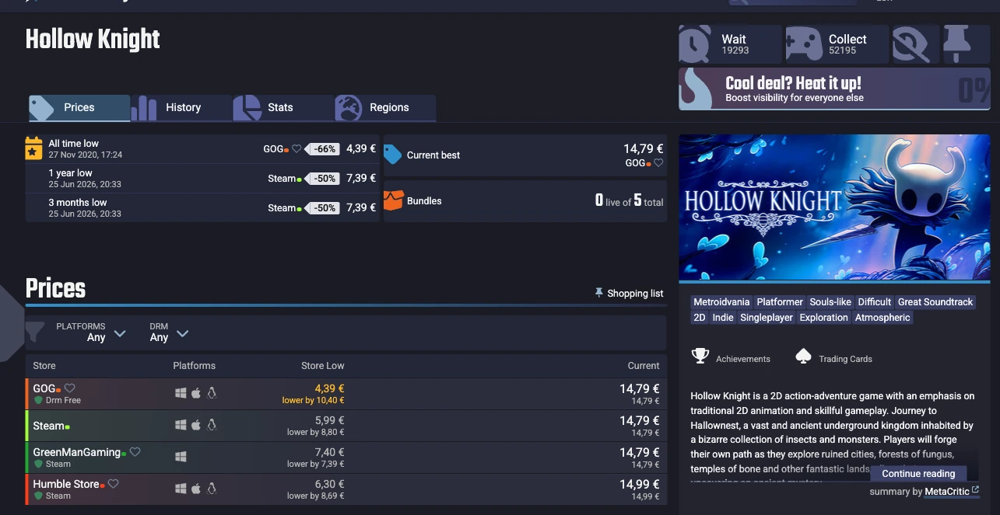
Что объединяет эти полезные сайты, которые работают до сих пор
У каждого из этих сайтов одна задача и свой подвох. Начни с того, что нужно прямо сейчас: открой раздел, пройди шаги и сверь экран с «Результатом».
Эти сайты объединяет одна идея: кто-то взял бытовую задачу и собрал под неё инструмент. Когда для твоего дела снова не хватает такой кнопки, следующим шагом может стать уже свой сайт, бот или калькулятор.
Практикум
Собери инструмент под своё дело
На ИИ-Лагере показывают, как собрать сайт, бота или калькулятор с Claude Code и Codex. Это ИИ-помощники, которым ты описываешь задачу словами, а они пишут код. На практикуме этот путь проходят по шагам, без программирования.
На ИИ-Лагерь*Meta признана экстремистской организацией и запрещена в РФ